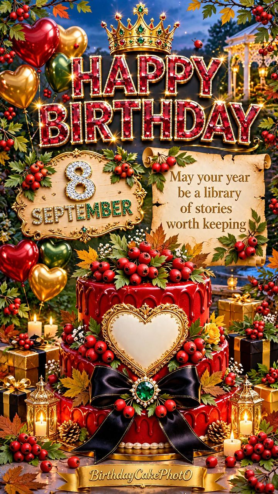
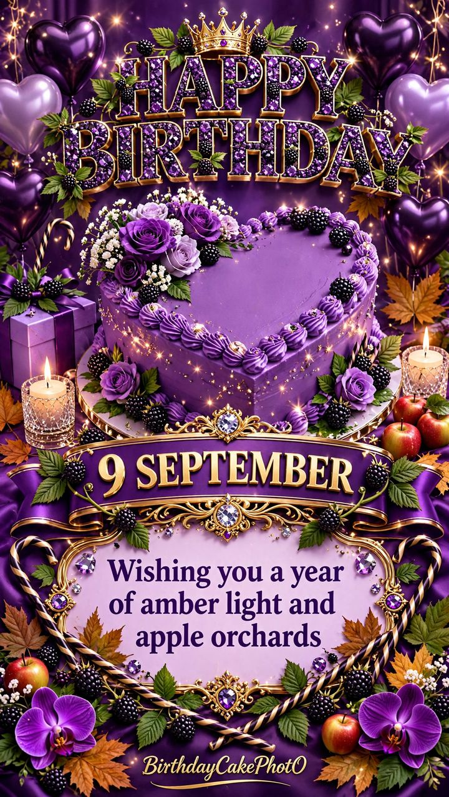
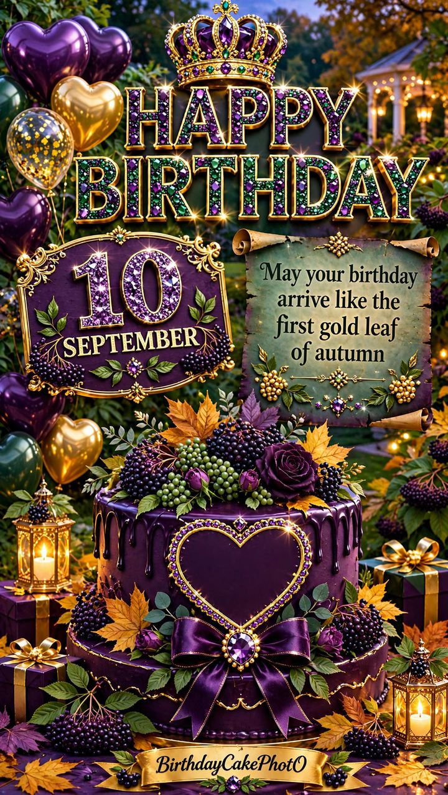
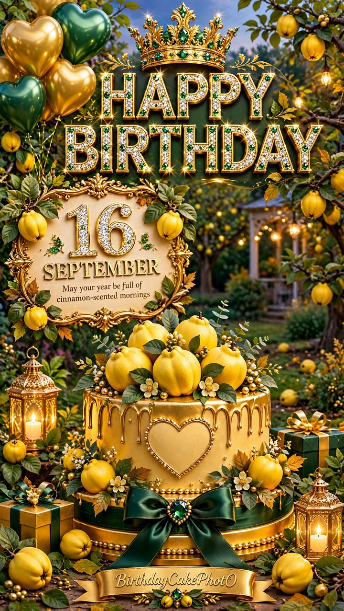
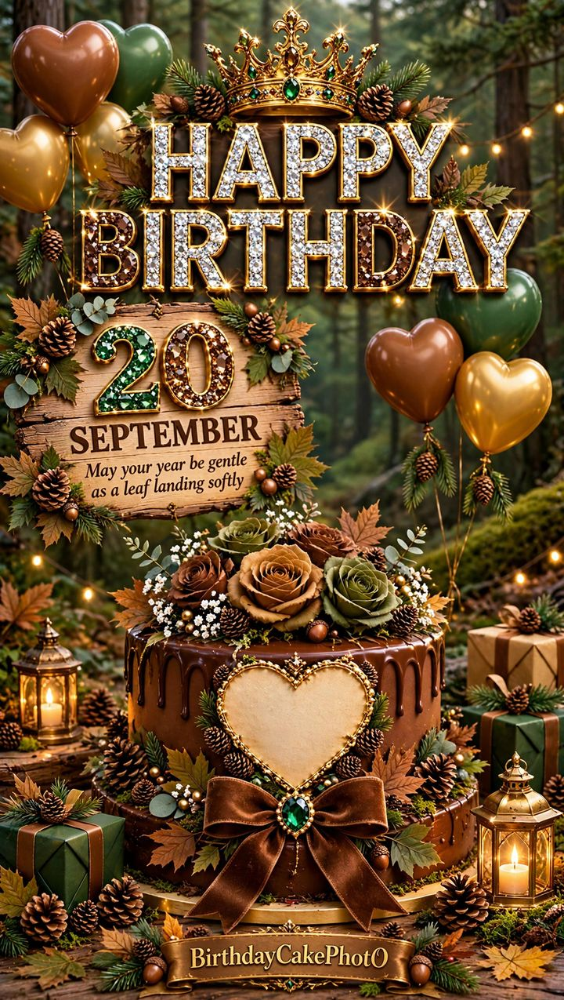
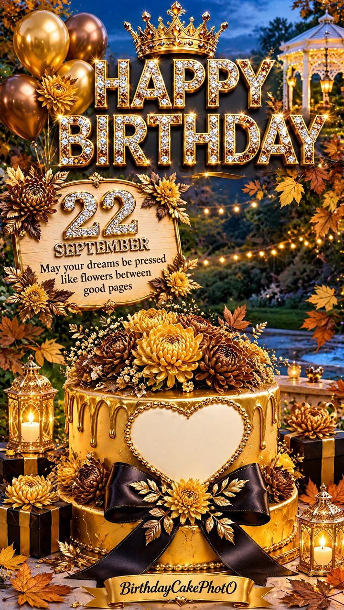
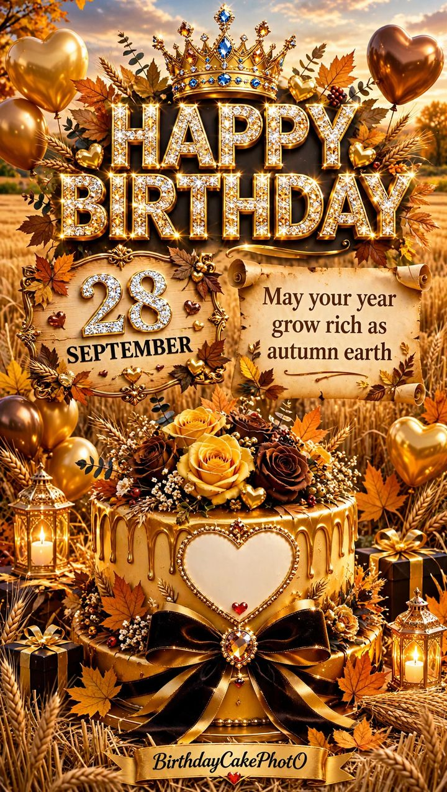
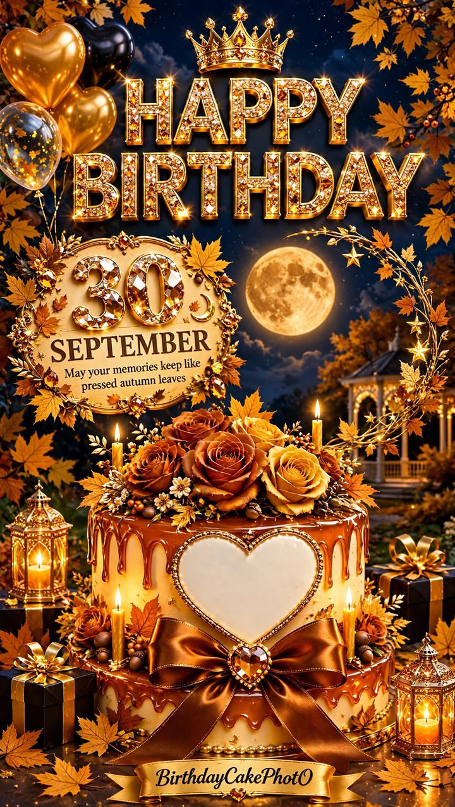

Find a free birthday photo for any day in September, from 1 to 30 September. Each date has its own design — download the photo for the birthday and share it with someone special.
Someone you love has a September birthday? Here you will find a free dated birthday photo for every single day of the month, from 1 September right through to 30 September. Each date has its own early-autumn design, so the photo you send always matches the day. They are free to download and share, and you can find more birthday ideas on Birthday Cake PhotO.
Birthday photos for September
1 September2 September3 September4 September5 September6 September7 September

8 September

9 September

10 September11 September12 September13 September14 September15 September

16 September17 September18 September19 September

20 September21 September

22 September23 September24 September25 September26 September27 September

28 September29 September

30 September
Birthday wishes for September birthdays
Happy birthday! May your September birthday bring you crisp morning air, golden leaves underfoot, and a year that starts as beautifully as autumn itself.
Wishing you a birthday as warm as a September sunset, and a year full of harvest plenty, good company, and evenings that glow with candlelight.
Happy birthday! May the year ahead treat you gently — with orchard-fresh days, starlit evenings, and friends who make every season sweeter.
Here's to you on your September birthday — may this year bring you new chapters worth reading, old friends worth keeping, and happiness that deepens like autumn colour.
Wishing you a day of cake and celebration, and a year that settles in like the best of autumn: rich, calm, and full of quiet surprises.
Happy birthday! May the shorter September days bring you longer talks, warmer hugs, and more time for everything that matters most.
Here's to a birthday wrapped in autumn gold — may the year ahead bring you good books, good company, and joy that keeps you warm all winter long.
Wishing you a birthday bright with russet leaves and soft September colour, and a year full of fresh starts, kind surprises, and reasons to smile every day.
Happy birthday! May this new year of life be as golden as a September afternoon and as generous as the harvest itself.
Here's to your September birthday — may the year ahead bring you clear skies, steady steps, and happiness that gathers like leaves in a favourite garden.
How to share these birthday photos
Find the photo for the birthday date and save it to your device — long-press the photo on a phone, or right-click it on a computer and choose save. Then send it as a message or post it on WhatsApp, Facebook, or Messenger. The photos are free to share for personal use, so you can send one to as many September birthdays as you like.
Questions people ask
Are these birthday photos free to download and share?
Yes. Every September birthday photo on this page is free to download and share for personal use — no sign-up and no payment needed.
What dates in September are covered?
All of them. The gallery has one birthday photo for each day from 1 September to 30 September, so every September birthday is covered.
Can I share a photo on WhatsApp or Facebook?
Yes. Download the photo for the birthday date, then share it from your phone or computer on WhatsApp, Facebook, Messenger, or any app you use.
Do the photos show a year?
No. Each photo shows the date and month only, so the same photo works every year.